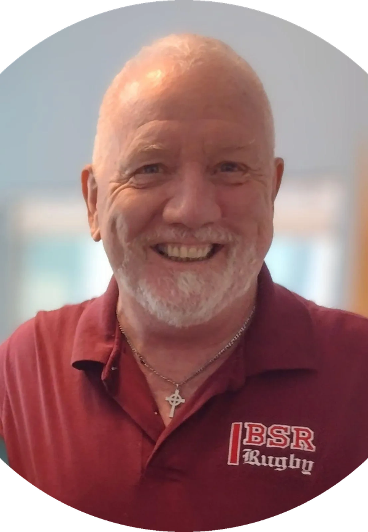

Meet your therapists
Experienced care from people who listen.
Kind Oasis brings one-on-one occupational and physical therapy to your home and community in the Fredericksburg area. We take time to understand your goals, routines, and what matters most to you.
The people behind your care
Clinical depth and a steady human presence.
Our therapists tailor care to your real life, with practical guidance you can use between visits.
Owner · Occupational Therapist
Kerri Newman-Darrow, OTR/L, CHT, RYT-200
Kerri is a Certified Hand Therapist, occupational therapist, and yoga and meditation teacher. Her trauma-informed, whole-person approach supports physical recovery, emotional resilience, and meaningful daily life.
She combines hand and upper-extremity rehabilitation with mindfulness, movement, and deep listening. Explore occupational therapy or hand therapy.

Physical Therapist
Garry Fitzgibbons, PT
Garry brings more than 30 years of outpatient physical therapy experience. He works with joint-replacement recovery, neck and back pain, balance, strengthening, and musculoskeletal concerns.
A United States Marine Corps veteran and lifelong athlete, Garry pairs practical clinical experience with a compassionate, reassuring style. Explore physical therapy.
Where we work
Care that fits your life.
We serve Fredericksburg, Stafford, Spotsylvania, King George, and surrounding Virginia communities. Availability depends on location and clinical needs.
Call or text (540) 227-4448